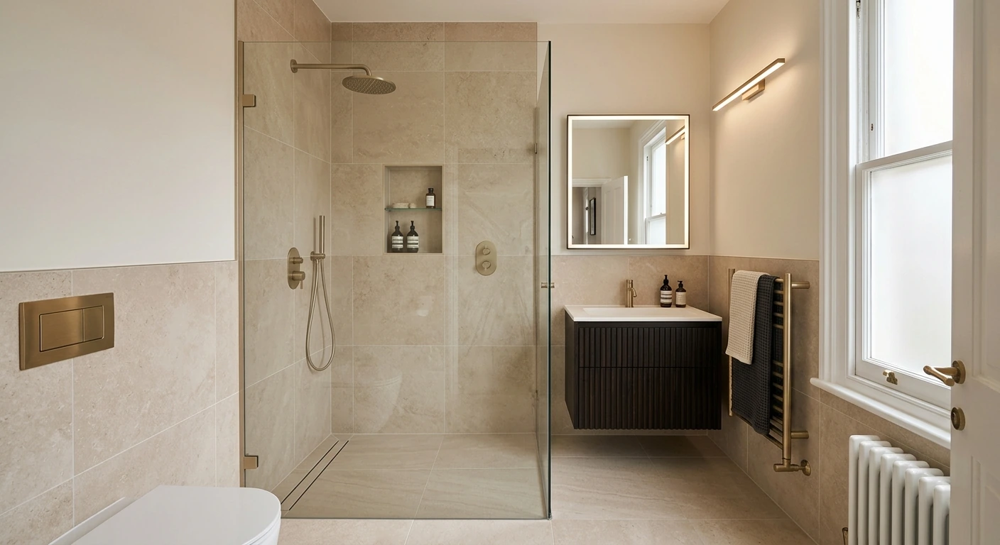
01Complete Bathroom
Complete Bathroom
Renovation
Creating cleaner, more modern and functional spaces, from the surfaces to the final details.
Discuss your project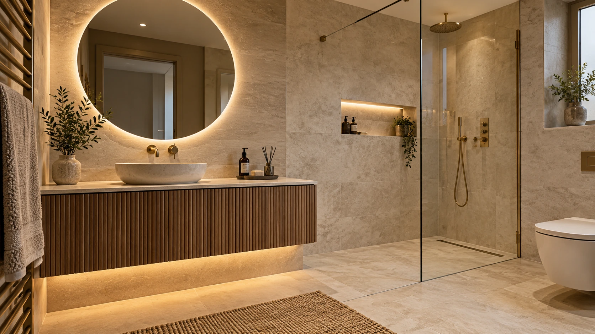
BATHROOM RENOVATION & TILING · LONDON
Premium bathroom renovation and tiling services for homes across London and surrounding areas.
THE SPACE. THE SURFACES. THE DETAILS.
Luxury Tiling & Bathroom Renovation brings a considered approach to bathroom renovation and professional tiling.
Clean finishes, careful detailing and contemporary design. For a room that feels right, every day.
Discover our approach01 / WHAT WE DO
From a complete bathroom renovation to the precision of a single tiled surface.

Creating cleaner, more modern and functional spaces, from the surfaces to the final details.
Discuss your projectPrecision tiling for bathroom walls, floors and feature areas.
Clean tiled finishes around shower and wet areas.
Refreshing dated spaces with modern surfaces, fittings and finishes.
Tiling upgrades and thoughtful finishing for bathroom renovation projects.
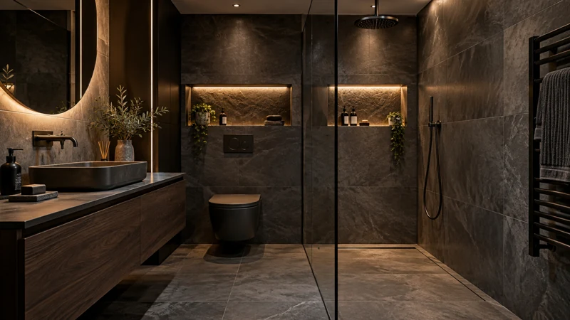
Good design is felt.
Good finishing is seen.
02 / IMAGINE THE POSSIBILITIES
From tired spaces to clean, modern finishes.
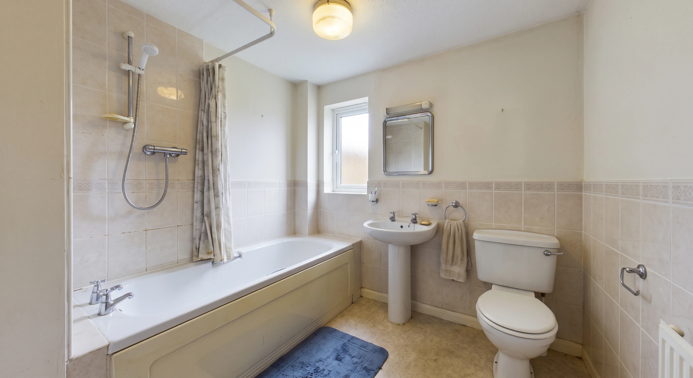
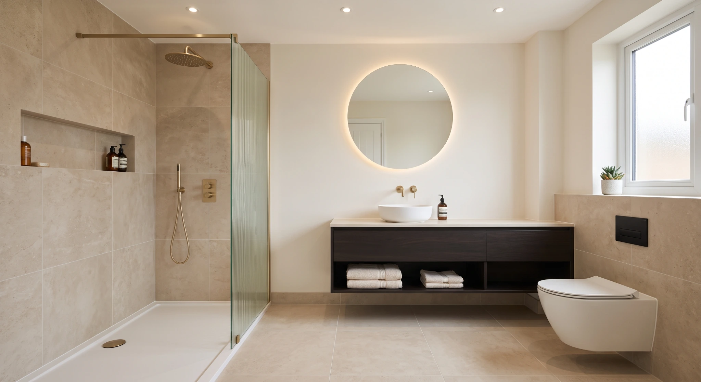
THE STARTING POINTA NEW DIRECTIONTransformation concept · Different spaces shown for design inspiration, not a verified before-and-after project.
03 / DESIGN INSPIRATION
Different palettes. Different personalities.
A considered space, whatever your style.
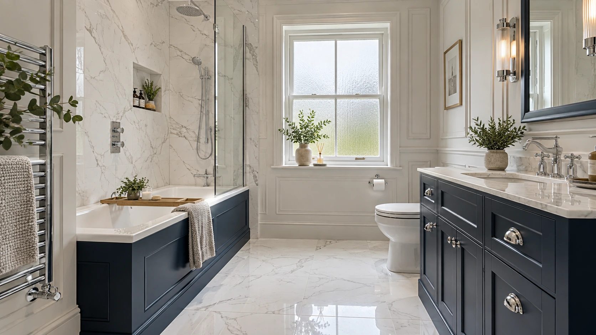
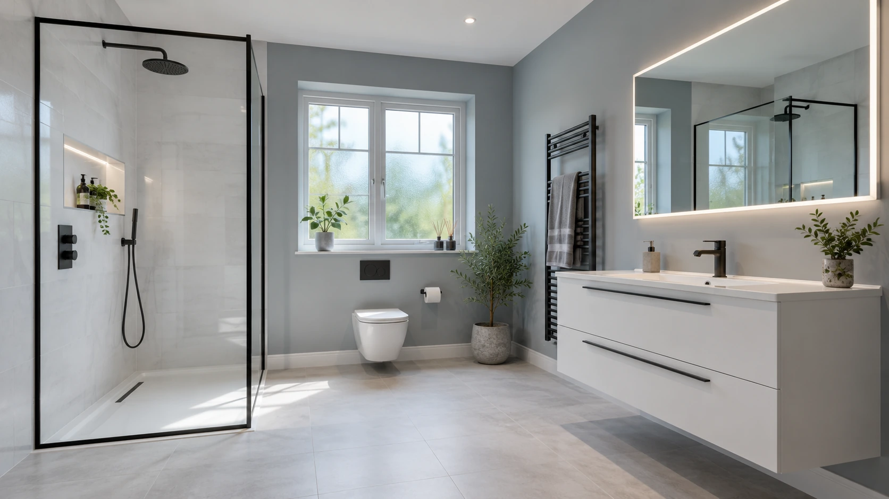
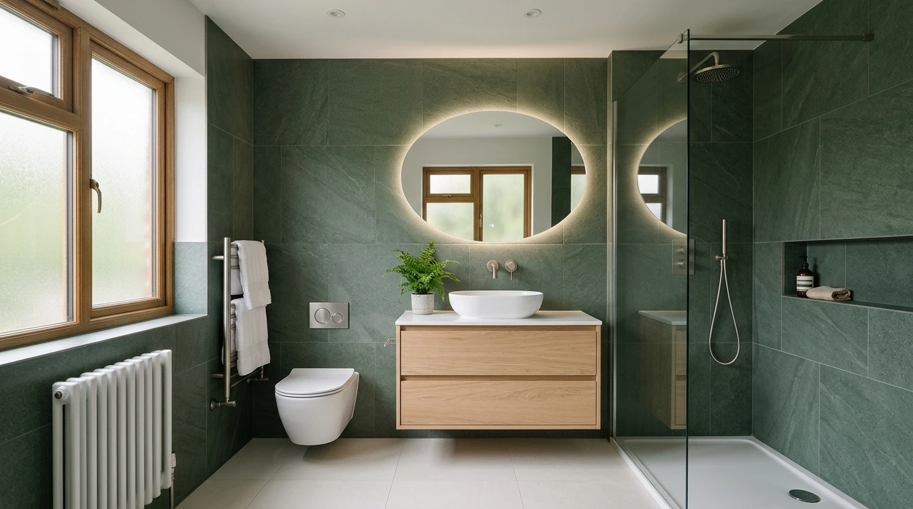
ROOM TO UNWIND
A freestanding bath. A warm, natural palette. A little space to slow down.
05 / Warm Freestanding Bath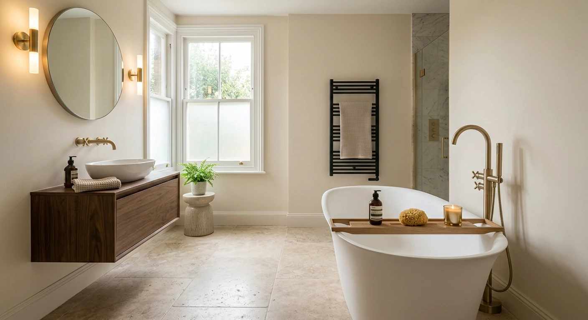
A collection of bathroom design inspiration. Images are illustrative demo visuals, not verified completed projects by the business.
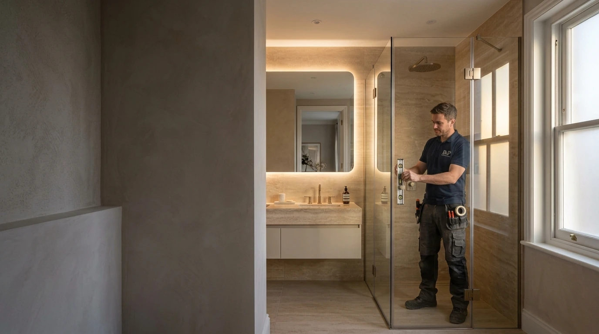
THE DETAILS MAKE THE DIFFERENCE04 / A CONSIDERED APPROACH
Careful tile alignment. Clean edges. Thoughtful finishing. The small details give the whole room its character.
A professional approach to bathroom renovation, with attention to the surfaces you see and the details you notice every day.
05 / HOW IT TAKES SHAPE
A straightforward way to start thinking about your new space.
Call and discuss your bathroom or tiling project.
Understand the room, required work and desired finish.
The bathroom renovation and tiling work takes shape.
Attention is given to the final details and completed appearance.
06 / LOCAL TRUST
Luxury Tiling & Bathroom Renovation
London
07 / CLOSE TO HOME
Serving London and surrounding local areas.
View on Google MapsA FEW USEFUL DETAILS
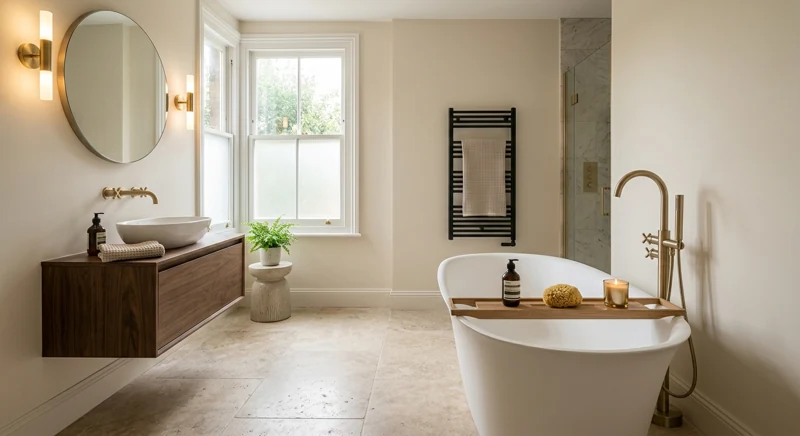
Yes. Luxury Tiling & Bathroom Renovation provides bathroom renovation and tiling services.
Yes, tiling is one of the business’s core services.
The business is based in London and serves London and surrounding local areas.
Call +44 7958 997064 to discuss your project.
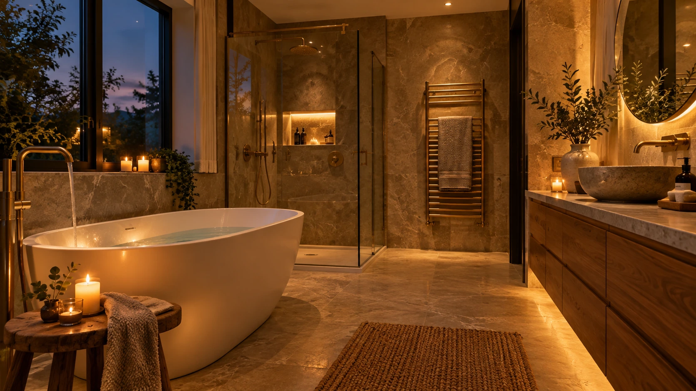
YOUR SPACE. REIMAGINED.
Discuss your bathroom renovation or tiling project today.
08 / LET'S TALK
Tell us what you have in mind for your bathroom or tiling project.
Luxury Tiling & Bathroom Renovation
65A Highview Rd, London
London & surrounding areas
★★★★★ 5.0 / 5 · 15 Reviews